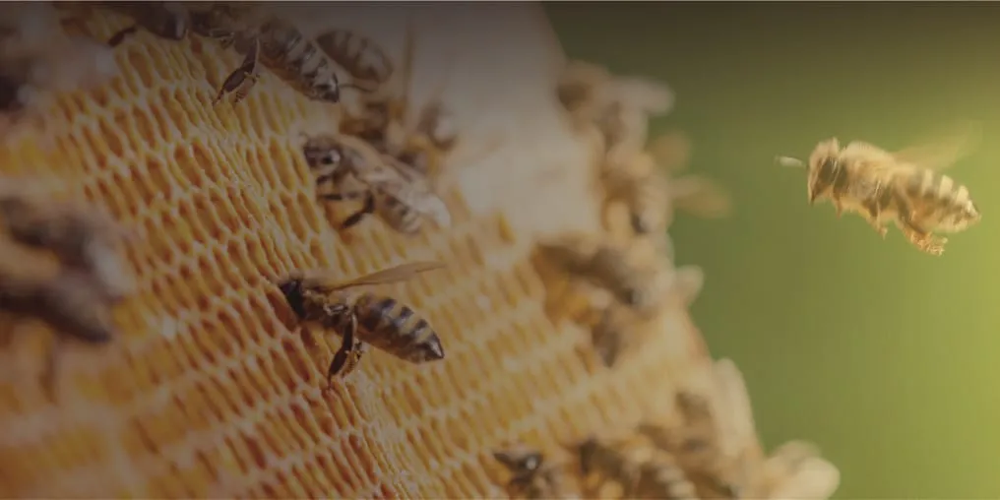
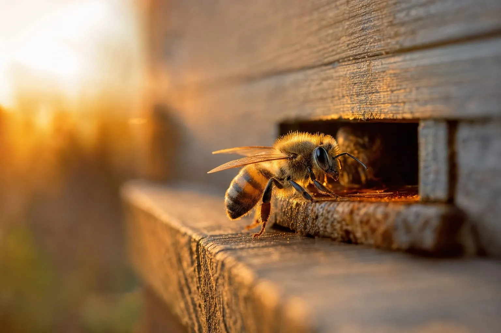

꿀벌 바이러스 옮기는 바로아 응애, 약제 내성도 번진다
벌 몸과 벌집 방 오가며 번식…꿀벌 무리 손실 통계는 주로 1년에 한 번 하는 설문에 기대

바로아 응애는 꿀벌에 기생하는 진드기로, 미국과 뉴질랜드 정부 기관이 봉군(꿀벌 무리) 손실의 주된 원인으로 꼽는 해충이다. 하지만 두 나라의 손실 통계는 대부분 양봉가가 손실을 돌이켜 답하는 설문에서 나온다. 한국에서는 응애의 약제 내성이 전국으로 번졌다는 발표가 2025년 잇따랐다.
통계로 본 봉군 손실
미국 농무부 농업연구청(USDA ARS)은 2025년 6월 미국 상업 양봉이 2024년 여름 이후 봉군의 60% 이상, 약 170만 군을 잃었다고 발표했다. 추정 피해액은 약 6억 달러다. 연구청은 응애가 옮긴 날개기형바이러스(DWV)와 급성마비바이러스가 붕괴의 마지막 단계 원인일 가능성이 높다고 봤고 채집한 응애는 거의 모두 약제 저항성을 지녔다. 이 원인 연구는 발표 당시 동료 심사 전 단계였다.
뉴질랜드 1차산업부(MPI)가 의뢰한 2023년 조사에서 겨울철 봉군 손실률은 12.65%였고 원인 가운데 응애가 가장 컸다. 국제 꿀벌 연구 단체 COLOSS가 37개국 양봉가를 설문한 결과 2019~2020년 겨울 손실률은 18.1%(국가별 7.4~36.5%)였다. 세 통계는 대상과 기간, 손실의 정의가 달라 맞비교할 수 없다.
응애의 한살이와 방제 기준
미국 미시시피주립대학교의 응애 관리 안내서(2023년판)에 따르면 암컷 응애는 애벌레가 자라는 소방(벌집의 방)에 일벌이 뚜껑을 덮기 15~18시간쯤 전에 들어간다. 뚜껑이 덮인 뒤 응애는 그 속에서 알을 낳고, 알을 만들 영양은 자라나는 벌 번데기를 먹어 얻는다. 번데기가 자라 벌이 되어 방을 나설 때 대개 어미 응애와 다 자란 딸 응애 1~2마리가 함께 빠져나온다. 이 응애들은 어른 벌의 몸 마디 사이에 매달려 일주일쯤 지낸 뒤 새 소방으로 들어간다. 안내서는 차이가 크긴 하지만 애벌레를 정상적으로 기르는 봉군이라면 대개 응애의 3분의 2는 뚜껑 덮인 방 안에, 3분의 1은 어른 벌에 있다고 본다. 애벌레가 없는 겨울 같은 때에는 어른 벌에 매달린 채 100일 넘게 살아남기도 한다.
오스트리아 보건식품안전청(AGES)에 따르면 응애가 옮기는 날개기형바이러스는 이름처럼 벌의 날개를 기형으로 만든다. 꿀벌건강연합(Honey Bee Health Coalition)은 성충(다 자란 벌) 100마리당 응애 3마리, 즉 3%를 방제 판단 기준으로 제시한다. 이 기준을 넘긴 기간이 길수록 바이러스량과 봉군 폐사가 많아지는 경향이 있다는 설명이다. USDA ARS 안내에 따르면 이 비율은 벌 약 300마리를 떠서 알코올로 씻어 떨어진 응애를 세어 잰다.
국내로 번진 약제 내성
농촌진흥청은 2025년 7월 9일 보도자료에서 국내 응애의 플루발리네이트(합성 응애 약제) 저항성이 전국으로 퍼졌다고 밝혔다. 국제 학술지에 실린 연구(Lee 2025)는 또 다른 주요 합성 약제에 대한 저항성 유전자 변이가 국내 응애에서 2020~2022년엔 드물다가 2023년 급증해 2024년 전국으로 퍼졌다고 보고했다. 농진청은 개미산·티몰 같은 천연 약제를 먼저 쓰고 아미트라즈·쿠마포스 같은 화학 약제는 제한적으로 번갈아 쓰라고 권고했다.
1년에 한 번 하는 설문
뉴질랜드와 COLOSS의 손실 통계는 1년에 한 번 양봉가에게 손실을 돌이켜 묻는 설문에 기댄다. 2023년 뉴질랜드 조사에서는 상업 양봉가의 약 18%가 응애 모니터링을 하지 않는다고 답했다.

그래픽: 해 질 녘 벌통 입구에 내려앉은 꿀벌을 그린 것으로, 실증 현장 사진이 아니다 (AI로 만든 이미지, BeeAI 홍보용)누리인포스가 주관하는 BeeAI(뉴질랜드 양봉 AI 해외실증) 사업에는 스마트 양봉 기업 온팜(브랜드 비온팜) 등이 참여한다. 사업은 양봉장에서 응애를 상시로 재는 데이터가 사실상 없다고 보고 벌통 입구 관찰로 이 빈틈을 메우려 한다. 입구 카메라로 드나드는 벌 몸의 응애를 관찰해 그 결과를 수치로 나타내는 방식이다. 사업 측은 이 값을 감염률이 아닌 지표로 쓴다. 사업 전반은 벌통 입구서 응애 살핀다, 한국 기업들 뉴질랜드 실증 기사에서 다룬다.
2026년 7월 사업 홍보 자료에 따르면 뉴질랜드 양봉장 3곳에 장비를 설치할 계획이었다. 카메라 관찰의 현장 정확도는 실증 중이다.
사업은 약 없이 소방을 데우는 방식도 연구하고 있다. 카메라로 본 값에 따라 처리 시점을 정하는 것은 2027년 이후 지향하는 방향이다.
이 사업은 과학기술정보통신부와 정보통신산업진흥원(NIPA)의 「엣지형 AI반도체 기반 뉴질랜드형 지능형 양봉 솔루션 해외실증」 과제로 추진되고 있다.
자료: USDA ARS 발표(2025년 6월 2일)·응애 검사 안내, 뉴질랜드 1차산업부(MPI) 2023년 봉군 손실 조사, COLOSS(2019~2020년 겨울), 미시시피주립대(2023) 응애 관리 안내서, 오스트리아 보건식품안전청(2025) 날개기형바이러스 안내, 농촌진흥청 보도자료(2025년 7월 9일), Lee(2025) 논문, Honey Bee Health Coalition 지침, BeeAI 사업 홍보 자료(2026년 7월), 비온팜 홈페이지 대표 사진(2026년 10월 8일 확인)
저작권자 © 윙윙통신 무단 전재 및 재배포 금지